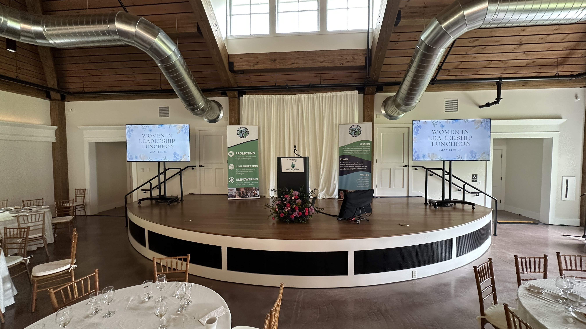
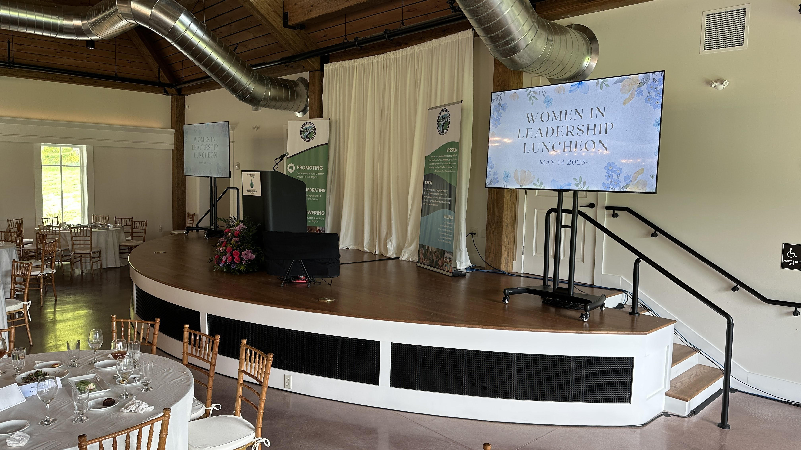
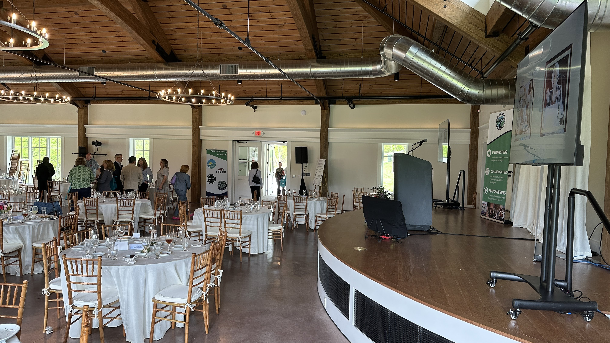

The 4th Annual Women In Leadership Luncheon. Over 200 in Lincoln Hall. Every word heard in the room.
The Southwestern Vermont Chamber’s fourth annual Women In Leadership Luncheon packed Hildene’s Lincoln Hall with over 200 attendees — the largest gathering this luncheon has had. Keynote speaker Deborah Slaner Larkin — former CEO of the Women’s Sports Foundation and a national Title IX advocate — needed a room that could hold the weight of that conversation. Lincoln Hall carries its own gravity. Our job was to amplify without competing.
We ran a full audio system with wireless microphones throughout the program. Larkin’s keynote was delivered from the podium mic. Three award presentations followed — honoring Sarah Al Janabi (Young Woman in Leadership), Erin Kaufman (Woman of the Year), and Janice Corey (Lifetime Achievement) — with each honoree coming forward to speak at a mic at the front of the room. A special In Memory tribute to Rita Dee was woven into the program. Every word landed clearly in a room that was already paying attention.
Video was part of Deborah Larkin’s presentation and played back cleanly through our system. The transitions between segments were managed live — switching content on the display and keeping levels consistent from keynote through awards without a gap. Lighting highlighted the speakers and the architectural features of Lincoln Hall throughout. The Bennington Banner named Equinox Audio Visuals as the event’s AV partner — a detail that reflects the care the Chamber brings to every element of this event.
The Chamber calls it a luncheon. It runs like a precision event. Presenting sponsors Berkshire Bank and Project Against Violent Encounters (PAVE) returned. Pangaea provided the meal. The 2026 edition is set for May 13th.


“Equinox understood the heart of our event — celebrating women leaders and creating meaningful connections. Their technical expertise allowed us to focus on the program and our guests, knowing every word and every moment would be captured beautifully.”